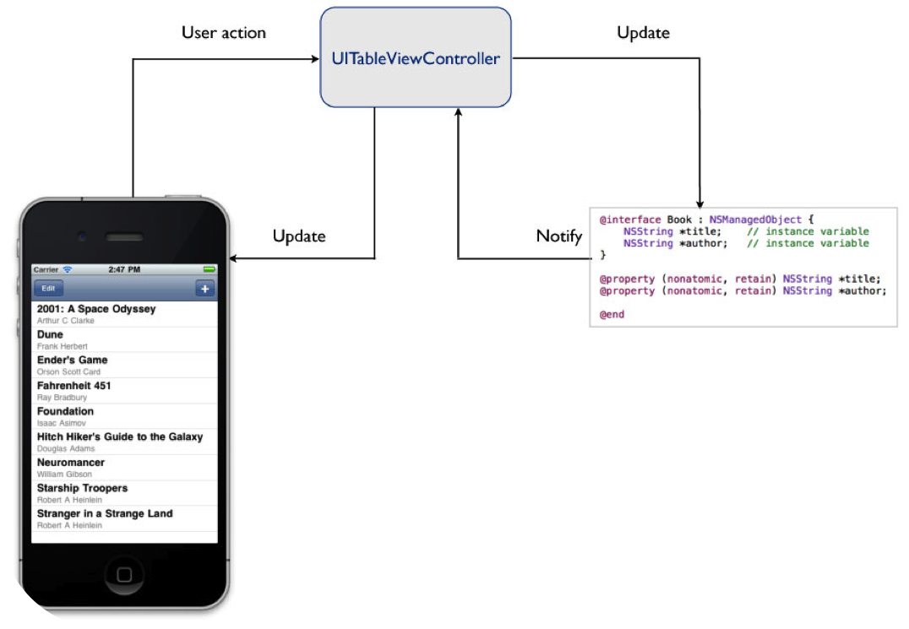

Mobile Application Development
with Android
Introduction to Mobile Application Development
Why Mobile?
Collectively, Americans spend over 1.000.000 Month on their mobile phones per day.
Smartphones overtake PC’s for the first time: 2011
Smartphones overtake Feature Phones for first time: April 2013
According to IDC, 418.6 million mobile phones were shipped in Q1 2013, including 216.2 smart phones
44% of mobile phone owners use their devices more than 10 times each day
Smart Phone Vendors
Mobile OS
Mobile App Economy
Apple's App Store is generating $5.4 million a day in app sales for the top 200 grossing iPhone and iPad apps
Mobile = $$$
Architecture
Traditional
Cloud
Zero Infrastructure
- ’rent’ it online on a pay-as-you-go subscription
Focus
- Instead of spending time and resources building server-side logic, focus on the mobile app functionality and user experience.
Application Services
- Mobile SDK
- Security
- Geolocation
Scalability
- The elastic scalability offered by cloud computing platforms
Instagram powered by AWS

Instagram Lessons Learned
- Keep it very simple
- Don’t re-invent the wheel
- Go with proven and solid technologies when you can
Instagram Architecture
- 100+ EC2 instances total for various purposes
- Amazon’s Elastic Load Balancer routes requests and 3 nginx instances sit behind the ELB
- Amazon’s Route53 for the DNS
- 25+ Django application servers on High-CPU Extra-Large machines
- PostgreSQL (users, photo metadata, tags, etc) runs on 12 Quadruple Extra-Large memory instances
- Several terabytes of photos are stored on Amazon S3
- Amazon CloudFront as the CDN
- ...
The Instagram Architecture Facebook Bought for a Cool Billion Dollars
Mobile Software Platforms
Mobile Software Platforms
Modern mobile OS combine the features of a PC operating system with
- Touch screen
- Cellular
- Wi-Fi
- GPS
- Camera
- Speed Recognition
- Voice Recorder
- Music Player
- NFC
- ...
Mobile Software Platforms

iOS
Android
Windows Phone 7
Development Needs
MVC
Model
View
Controller
Android MVC
Considerations & Limitations
?
- Power consumption
- Loss of data
- Limited user interfaces
- Limited memory
- Limited data transfer
Application Design
Three Behavioral Trends
1. Convenience
Less is more. Transform business and culture with simple solutions
2. Context
Help people find information that is useful in real time
3. Fun
Mix in delight, surprise, and reward to build and retain relationship
Design Purpose
Design Process
- User Centric Strategy
- Scope
- Information Architecture & Design
- Navigation Design
- Visual Design
UX
Mobile Application Types
1. Native Applications
iOS, Android, Windows Phone, ...
2. Mobile Web Application
Browser based apps using standards like HTML5, CSS3, JS
3. Hybrid Applications
A thin native shell is built around a browser
Native vs HTML5?
Native vs HTML5?
- UX
- Performance
- Security
- Cross-Platform Costs
- Updates & Distribution
UX
Native apps can deliver best UX experinces leveraging the full capabilities of the device and OS.
UX
“The biggest mistake we made as a company was betting to much on HTML5 as opposed to native. It just wasn't ready. -Mark Zuckerberg, Sep. 2012.”
Performance
HTML5 still faces challenges in accessing device-native features access all mobile browsers and in rendering graphically rich user interfaces.
Security
Native app's source and cache is encrypted. On the other hand, a web app's source is much easier to access and corrupt.
Cross Platform Costs
Native apps require a new development and testing process for each platform. HTML5 was built to be the common language of the web regardless of the device or OS.
Updates & Distribution
Web is an open platform which is not under a monopoly of any companies like Google or Apple. However HTML5 is a bit slow in supporting new phone features as device makers innovate.
And the Winner is...
Neither of them.
Mobile Web App Development
Advantages
- Use what you know
- No approval process
- Auto-upgrade
- Cross-Platform
- Be Agile
Disadvantages
-
Not a silver bullet
- No single code base
- Still need to know how native apps work
- Not native enough – UX Problems
- Performance Problems
- Exception handling
- Limited community
Mobile JS Frameworks
- JQuery Mobile
- Sencha Touch
- jQTouch
- and many more...
Cross Platform Frameworks
- PhoneGap
- Corona SDK
- RhoMobile
- and many more...
How Cross Platforms Work?
Ex. PhoneGap
PhoneGap
PhoneGap
PhoneGap
PhoneGap Workflow
PhoneGap Workflow
PhoneGap Build
Assignment #2
-
Mobile JS Frameworks
- Advantages, Disadvantages, Browser Support
- Compare with each other
-
Cross Platform Mobile Frameworks
- Feature set (platform. device support etc.)
- Compare with each other
-
Create A Greeting Application in PhoneGap for Android
- Get name from user
- Write Hello $name
- Deadline: 21/10/2013